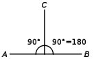

Беседа 3169 от 3877 · Беинса Дуно
Съвършенството
Сряда, 5 ч сутринта
„Отче наш“
„Мога да кажа“
Пишете върху темата: „Отличителните черти на водата и въздуха“.
Ако ви попитат коя е отличителната черта на пияницата, какво ще кажете? Една отличителна черта да кажете. По какво се отличава един пияница от един трезвен човек? Трезвеният по какво се отличава и пияницата по какво се отличава? В пияницата има две черти, които са постоянни. Той има голямо постоянство – постоянство в пиенето. Като стане сутрин, веднага пие. Той е постоянен и при това, той е откровен. Казва: „Имате ли вино?“ – веднага на въпроса, заобикалки няма. Онзи, който е свършил по пиянство, говоря за свършилите, не за онези, които започват първото отделение на пиянството, но има свършили… Казвате: в какъв смисъл говоря? Преносен смисъл.
Питат ме: „Как съвършеният човек не се е проявил, нали Христос е идвал? Нали Христос е съвършеният човек?“ Какво нещо е съвършенство? Една машина може да е съвършена в своята работа. В какъв смисъл трябва да се приеме един съвършен човек? Има едно механическо съвършенство. Нещата може да бъдат съвършени механически, може да бъдат съвършени органически и пак могат да бъдат съвършени психически. Съвършенството в Божествения свят разбира съвсем друго нещо, отколкото обикновеното съвършенство. Ако тебе в едно общество не ти дават място да се проявиш, питам: тия хора съвършени ли са? Може да имат благоразумие. Съвършеният човек не иска да се бори. Да кажем, какво разбирате под един съвършен пехливанин? Дето се яви, побеждава. Щом го победят, съвършенството свършва, не е съвършен. Съвършеният човек се отличава с три черти. Той цени живота. Съвършеният човек никога не мърмори. В него мърморене няма. Той не знае какво нещо е мърморене. Той няма условие да мърмори. Всичко е негово, той не може да каже, че това няма. Вие сте недоволни, защо? Ако един механик е недоволен от своя автомобил, къде е причината – в автомобила или в него? Щом е недоволен, да поправи своето недоволство. Не върви автомобилът както трябва. Може причината да не е в него, но може да е в онези, които са създали автомобила. Автомобилните фабрики някой път не ги изработват както трябва, че шофьорът се намира в някоя мъчнотия, колата не функционира както трябва.
По някой път вие се намирате в мъчнотия със себе си. Мъчнотиите ви може да бъдат физически, може да бъдат духовни, може да бъдат органически вътре, пък може да бъдат и от умствен характер. Но то остава една идея неразбрана.

Значи казвам, че съвършеният човек още не се е проявил. Сега някои казват, че и Христос не е съвършен. Вие нямате понятие какво нещо е Христос. Питам сега: Слънцето съвършено ли е? Понеже Слънцето е светло, всички мислят, че то е образ на съвършенство. Но учените хора започнаха да виждат, че и то има черни петна, не е така светло, както го виждаме, на много места има големи черни петна. Някои от тия петна са по-големи от Земята, някои 10, 15, 20 пъти са по-големи. Не е навсякъде Слънцето еднакво светло, както го виждаме. Ние мислим светлината е съвършенство. Но какви качества има този, светлият цвят?
Съвършеният човек е онзи, който не прави никакви погрешки. Щом прави погрешки, какво трябва да прави? Не е съвършен. Тогава трябва ли да се осъждаме? Не. Да допуснем, че един философ е съвършен в своите разсъждения. Или някой писател пише много добре. Знае къде да тури думите, точките, запетаите. Съвършеният грешки не прави. Като пише, грешки никъде няма да направи. Турете го на една по-долна работа, дайте му една мотика, ще видите колко погрешки ще направи. Ще дойде друг, който е по-сведущ, ще му каже: „Ти много плитко си изкопал, така не се копае два пръста с мотиката, трябва поне една педя с мотиката да се изкопае.“
Някъде вие сте съвършени, някъде не сте съвършени. Как ще обясните сега противоречието? Значи не сте били в тази област, не сте я проучвали. Някои казват, че човек трябва да бъде морално чист. Но какво отношение има чистотата спрямо човека? Най-първо, чистотата в човека има отношение към тялото. Всичките пори на човека трябва да бъдат отворени, ако иска да бъде здрав. Аз не съм броил прозорците на човешкото тяло, аз не съм ги чел, но вярвам на другите, които са ги броили. Цитирам другите, които са ги броили. И те не са ги броили, защото да седнеш да преброиш 7 милиона прозорци на човешкото тяло, колко време ще вземе? Вие може да прочетете до 1000 и вижте на часовника колко време ще ви вземе, докато преброите до 1000. Направете тогава една сметка за 7 милиона докато преброите, колко време ще ви вземе. Или дадат ти да преброиш един милион, а го преброиш и да не ти стане мъчно. Някой път приятно ти е да четеш един милион златни монети, голямо богатство да го четеш. Дадат ти да четеш един милион пясъчни зрънца или дадат ти да четеш развалени, гнили плодове. Държавата иска да накаже тези, които продават плодовете, турят те тебе като инспектор един милион гнили плодове да преброиш, да наложиш една глоба. Питам: тази работа как ще я свършиш? Аз не бих желал да ви се дадат един милион да четете, даже и 100 000, пък и 1000 гнили плодове. 10–20 да четеш, както и да е. А пък гледам някои от вас тук сте специалисти. Вас ви трепери сърцето да намерите някои гнили плодове. Като ги намерите, усмихне ви се лицето. Гледал съм тук някои сестри, като намерят някой гнил плод, светне им лицето. А пък като намерят някой добър плод, станат сериозни. Сега как ще ми обясните защо сестрата се радва, когато намери гнилия плод и става сериозна, когато намери добър плод? Едва сега и аз започвам да го изучавам, и за мене е една тайна.
Да оставим шегите настрана. Един направил една погрешка и щели да го осъдят за 10 години затвор. Като го съдили, каквото и да го питали, той все отговарял: „Ама че го каза.“ Питат го: „Ти уби ли този човек?“ – „Хъм, че го каза, хъм!“ – „На кое време го направи?“ – „Хъм, че го каза, хъм!“ Каквото и да го питали, той отговарял все по тоя начин. Съдията казва: „Този човек е ненормален.“ Не го осъждат, като ненормален. Адвокатът казва: „Сега спечелихме делото, ще трябва да ми платиш.“ – „Хама, че го каза, хъм!“ Той прилага и към него същото.
Това не е наука. Когато не обичаш някой човек и като ти кажат, че извършил някаква погрешка – това [е] един гнил плод – тебе ти стане приятно. Като не обичаш човека, кажат ти някаква добродетел за него – станеш веднага сериозен. Нали е така? Факт е, но да се обясни психологически. Защо се радва човек на погрешката на едного, когото не обича, а при доброто, което прави, става сериозен? Първо, онзи, който се радва на погрешката, той е дяволът. Ако ти се зарадваш, дяволът в тебе се радва. Щом кажеш доброто за едного, когото не обичаш, дяволът става сериозен. Защо дяволът се радва? Радва се, като правите погрешки, понеже казва: „Като прави погрешки, той е в моите ръце.“
Служил един вярващ при един господар, който е безверник. Слугата се казвал Стоян. Казва му господарят: „Стояне, ти си вярващ, в Господа вярваш, пък постоянно те мъчи дяволът. Аз не мога да разбера това. Аз ни в Господа вярвам, пък дяволът не ме мъчи, никой не ме мъчи. Аз се чудя с вас, каква вяра имате. Ние без вяра живеем – никой не ни мъчи. Вие с вяра живеете и все има някой да ви мъчи.“ Намерил се Стоян в трудно положение. Факт е, че вярващите ги мъчи нещо. Господарят на Стоян бил ловец и един ден отиват на лов за патици, зимно време било. Гръмва и убива две патици, които падат на земята. Една ранил и тича подир нея, стреля. Стоян казва: „Господарю, защо гониш тази патица, защо не вземеш убитите?“ Казва: „Тая не е доубита и тичам подир нея.“ – „И тебе дяволът не те засяга, защото ти си от убитите, той те има във властта си. Аз съм ранен, че мене ме гони. Аз бягам, имам малко живот, бягам, за да спася живота си. Ти си вързан от дявола, няма какво да те измъчва.“ Щом дяволът не те изкушава, вие сте негови. Щом ви изкушава, не сте негови. Щом дойде изкушението, щом дойде страданието, в ръцете на дявола не сте. Всички ония, които страдат, не са на дявола. Които не страдат, те са с дявола наедно. Тъй отговорил Стоян. Така му дошло на ум на Стояна.
В съвършения човек, лъжа в него няма. Да изнудва хората – няма такова нещо. Да изобличава мислите, желанията и постъпките – няма. Той е прям в себе си. Не отвън да каже: „Аз направих една погрешка, извини.“ Той не се извинява, защото никога не оставя неговите погрешки да излязат на пазара. Бог, Който е съвършен, направи човека. Как ще обясните, защо човек греши? Този, когото Бог направи, греши. Как ще обясните прегрешенията на човека? Вторият човек греши, първият не греши. Има две творби на света – едната е на физическото поле и оттам започва прегрешението. Първият човек, когото Бог направи, съгреши и първата жена, която направи, и тя съгреши. Непослушание в тях се яви. Адам не послуша Бога, Ева не послуша Адама и не послуша Бога. Адам не послуша Бога, а послуша жена си, другарката си послуша. И Ева не послуша Бога, а послуша онзи черния адепт.
Кои бяха причините, че те не послушаха Бога? Всякога, когато е въпросът за непослушанието, човек иска да знае. Сегашните хора какво спечелиха от непослушанието? Ако един ученик е в училището, има вече условия да бъде вече благоприятен на учителите, да го подигнат. Ако не слуша, може да го изключат. Има известни съображения, но той е същият закон. Влезеш в един свят, дето всичките хора са свободни, културни. Питам: На свободния човек позволено ли му е да прави погрешки? Вземете един певец, който има отличен глас – позволено ли му е да прави погрешки? Ако прави погрешки, къде е причината? Ако прави погрешки, може да има някакви причини. Ако направи погрешки в пеенето, причината може да седи в яденето му. Ял нещо. Или пък почувствувал нещо, което е повлияло, или е помислил нещо. Казвам, че причината може да бъде яденето или дишането, или електричеството, или магнетизмът, които минават през неговата нервна система. Те са повлияли на гърлото му. Ако е яденето, това зависи от неговите постъпки. Ако е дишането, това е неговата чувствителност. Ако е електричеството и магнетизмът, това е неговата мисъл. Свързани са те. Повлияли са на гърлото и той не може да владее своя глас. Да кажем, някой път вие се напъвате да говорите по-високо, да ви чуят надалече. Когато казвате нещо много интимно, от особен характер, говорите съвсем тихо. (Учителят имитира човек, който говори тихо.) Чухте ли го? Аз да ви го протълкувам: „Казаха ми нещо много важно, интересно ми казаха. Случило се нещо чудно, ама никой да не го знае!“
Една баба Стана, баба Стана – старата репортьорка на вестника във Варна, низко я наричат „главната репортьорка“ в село – като стане нещо в село, иде в някоя къща и казва: „Ще ви кажа едно нещо, никому да не го казвате. Само на вас го казвам.“ Оттам във втора къща ще иде и каже: „Само на вас ще го кажа, чудно нещо е станало, никому да не го казвате. Само на вас го казвам.“ Ходи от къща на къща, само на тях го казва и цялото село го казва. И тя пита: „Кой разправи това нещо? Аз само на едно място го казах. Колко лоши са тези хора. Да не кажеш нещо на хората, ще го разправят на всички!“
Аз съм съвършен човек, защото не искам да кажа нито една лъжа. Искам да ви представя работата както е, представям ви баба Стана каквато е. Ако ви я представя каквато не е, че седи сериозна, не е така. Казвате: „Защо Учителят така представя?“ Че, баба Стана ви представям. Няма да ви представя баба Стана с вдигната глава. Ще представяте вярно нещата. Някои при мене дойдат, искат да се покажат много сериозни. Че, какво нещо е сериозният човек? Религиозният човек? Религиозният човек е заинтересован, той е като влюбения момък. Той като слуша да кажат нещо за неговата възлюблена: „Какво ще ми кажете? Къде я видяхте, на кое място?“ Аз говоря за онез влюбени, които са чистосърдечни. Има едни влюбени, които се показват, че нищо не ги интересува.
Човек трябва да мяза на природата – естествен във всички свои проявления. Разбира се, аз като представям тия работи, така се иждивява повече енергия и може да ме питате: „Къде отиде тази енергия?“ Аз трябва да разправям, че като представях баба Стана, трябваше повече енергия, да я представя, да кажа истината. Като представям баба Стана, доста енергия трябва. Голямо изкуство е. Вие представяли ли сте баба Стана? Я станете да ми я представите. Всеки един от вас може да представи баба Стана. Ако ви кажат нещо приятно, вие ставате сериозни. Само да ви кажат някоя дума и вие ставате сериозен, особено набръчкване става на лицето, недоволен е. Очите се свиват, устата е деформирана и лицето е деформирано. Значи сърцето работи. Когато има недоволство в ума си, тогава има една политика, една гънка, едно свиване, както мечката, която е намислила да яде някого. Като срещне някого, когато решила да яде – аз да ви кажа кога една мечка решила да ви яде или не, да бягате: ако започне да си глади козината, тя е намислила да те яде. Казва: „Ще се намажа.“ Когато няма да ти причини никаква вреда, нахохори си козината, щръкне, взема един страшен вид, после те плюе, плюе и си замине. Когато ще те яде, глади си козината, плюене няма. Дойде, един удар и на земята те повали, смуче ти кръвта и се свърши работата. Тъй прави мечката.
Та казвам: Съвършенство в Христа имаше, тук учеше неща, които не знаеше. Вие ще кажете: „Как тъй съвършеният да не знае?“ Христос дойде да изучава един свят, който Той не е създал. Той дойде в един свят, който беше създаден чрез Него, Той дойде да види как е създаден. Бог създаде [този] свят и вие свързвате Христа с Онзи, Който е създал света. Той сам казва: „Никой не може да дойде при Мене, ако Отец Ми не го е привлякъл.“ Вие сега правите първата погрешка. Вие мислите, че като сте привлечени при Христа, казвате, че Христос ви е привлякъл. Имате една грешка от Неговото становище. Той казва: „Никой не може да дойде при Мене, ако Отец Ми не го е привлякъл с любовта. И никой не може да отиде при Отца, ако Аз не му покажа пътя.“ Вие казвате: „Аз намерих Бога.“ Вие не говорите истината. Ако вие сте намерили Бога, вие трябва да бъдете на мястото на Христа. Щом не сте при Христа, тогава как сте намерили Бога? Ако сте отишли при Христа, значи Бог ви е привлякъл. Ако сте намерили Бога, тогава Христос ви е показал мястото.
То са разсъждения. Вие ги пропущате тия разсъждения и тогава разсъжденията ви не могат да бъдат верни. Вие не може да идете при Христа без любовта на Бога, ако Той не ви е привлякъл. Вие не можете да намерите Бога, ако Христос не ви е показал пътя. Той е излязъл от Отца. Този път, по който излязъл, Той го знае. Значи Той може да ви посочи пътя. Вие ще кажете: „Аз може да намеря пътя.“ Хубаво, ако вие може да намерите пътя, аз ви изпращам до Луната, намерете си пътя. Някои от вас, които сте много учени, давам ви свободен билет до Луната. Не ви показвам пътя – сами да си намерите пътя до Месечината. Как ще идете? Вие казвате, че навсякъде може да идете и всичко може да направите. Казвам да идете до Луната. Нали всичко може да направите? Пък може да ви дам друг билет до Венера, до Слънцето. Как ще идете, кажете ми. Може да ви кажа: „Давам ви свободен ход да идете до Америка.“ Или да идете в Англия. Сега може ли да идете в Англия? Колко официалности, ще изваждаш паспорт, разни позволителни, че трябва да имаш валута. Сега пари трябват. Как ще идеш без пари? Да идеш в Америка трябват най-малко да имаш 500 долара в запас. Като слизаш на американския бряг, 500 долара трябват, 50 000 наши пари. Според вестниците, както е турен курсът на долара, не е верен. Официално е 82 лева, а неофициално е 140 лева. Защо е сега официално 82, а неофициално – 140 лева? Онези от черната борса го знаят това нещо. В курса на държавата е 82 лв.
Та казвам сега: И вие може да направите известни аналогии. Един ден, като станем съвършени, ще бъдем в състояние да идем до Месечината. Христос, като възкръсна, стана съвършен. Учениците ходиха и видяха Неговото съвършенство, и той им го показа, като си замина от Земята, не като дойде на Земята. Като дойде на Земята, показа своето съвършенство в търпение и донякъде показа само една Своя слабост, първата Му слабост. Коя беше първата слабост на Христа? Че като Му туриха кръста, Той го носи и после падна на едно място, не можа да го носи. Дойде до едно място, остави кръста, не можа да го носи. Какво ще кажете на туй отгоре? Вие ще цитирате моите думи, че сам Христос хвърлил кръста. Аз тълкувам сега. Той носи кръста до едно място и като разсъждаваше, дойде до едно заключение, казва: „То не е геройство да носиш кръста. Да носиш дървен кръст, безпредметно е.“ Казва: „Дайте нещо по-сериозно.“ Като хвърли дървения кръст, Христос намери истинския кръст. Казва: „С такива детински работи няма какво да се занимавам.“ И той нарами онзи истинския кръст. Казва: „Опитайте Ме сега.“ Казват му: „Слез ти от кръста, нали си от съвършените хора? Казваш, че си Син Божи.“ Казвам: Съвършенството на Христа седи в това, че Онзи, Който беше с него, казва: „Нека Те заковат, нека видят как ще умреш, нека Те заровят, тогава Ти ще познаеш, че Аз съм Бог, Който Те ръководи, и ще Те избавя.“ Съвършенството на Христа е във възкресението.
Съвършенството се проявява, когато човек и Бог са в едно. Не може да бъдеш съвършен без Бога. Бог не може да се прояви, ако ти не съгласуваш своята воля с Божията Воля. Вие никога не можете да бъдете съвършени, ако не съгласувате вашата воля с Божията Воля. Никой не може да стане съвършен без Бога. Това са изводи. Това е опитност, която ще имате за бъдеще да проверите. Във всеки даден момент, всяко изпитание, каквото и да е изпитанието, ти не може да разрешиш каквато и да е мъчнотия в света, ако не свържеш своята воля с Божията Воля. Бог е създал света и ти ще се отнесеш до Него как трябва да се разреши тази мъчнотия. Тя е мъчнотия, понеже хората не са изпълнили своята длъжност както трябва. Вземете един в счетоводството, трябва да уреди финансовите сметки на един загазил търговец. С дни ще се рови в книгите, докато намери и оправи всичките погрешки, да тури всичко в ред и порядък.
Запример вие тук ми говорите само за любовта. Какво нещо е любовта? Туй изречение „Какво нещо е любовта?“ не е правилно. (Учителят го изговори силно.) Трябваше да го кажа тихо. Сега, като обичате някого и той ви се сърди, вие му говорите тихичко: „Няма да ми се сърдиш, аз тебе те обичам.“ На другите ще кажете: „Не му обръщайте внимание“, но само на него ще кажете: „Само Вас Ви обичам.“ Да не знае никой. „За тебе имам високо мнение, ти си много умен. Не обръщай внимание на тия.“ Някой казва: „Аз ги примирих, работата е огладена. Всичко е хубаво.“ Една сестра дойде и ми разправя, казва: „Примирих ги, Учителю, по братски си живеят братът и сестрата, такава хармония.“ На втория ден гледам, те се бият двамата. Не само вие, но и целият свят е пълен все с оправени работи. И една не е оправена, всички са оправени. Работите не са оправени, има нещо, което куца.
Човек трябва да обича, за да оправи всичките си криви работи. То е огънят, който е потребен за желязото, за да може да се изправи кривото желязо. Понеже туй желязо, ако не се нагорещи, не може да се изправи. Ако се нагорещи или ако се стопи, може да се изправи. Казвам: Любовта е необходима в света, за да може да се изправят миналите погрешки. Не само да се изправят погрешките, но като се изправят, да се внесе нещо ново. Не само любовта ще ни застави да идем да намерим бедните, страдащите, но тази любов ще ни застави да идем да вземем храна, да идем и да услужим. Не само майката трябва да роди едно дете, но на туй дете любовта ще донесе всичките необходими материали, които са необходими за отглеждането на детето. Та казвам: Не само да носите една велика идея. Казвате: „Аз имам велика идея, отлична идея.“ Но тази идея трябва да я отгледате. Тази идея вие трябва да я отгледате не само за Земята, но тази идея, тя ще ви трябва и за бъдеще.
Ако вие не свържете вашата воля с Волята Божия, кой ще ви бъде крив? На какво ще разчитате вие? Аз ви обичам. Аз разсъждавам. Тия хора Бог ги е привлякъл към мене. Какво иска Бог от мене? Аз трябва да им покажа пътя, да го намерят Него там, отдето аз съм излязъл. Казвам: Този е пътят, хванете този път, от който аз съм излязъл. И вие, като идете, ще се върнете да ми кажете какво сте видели. Вие трябва да дойдете при мене, да идете при Бога и да се върнете. Тогава, като се върнете, ще има един оборот на нещата и нещата ще станат ясни.
Същият закон е и за вас. Дойде някой човек, Бог го е пратил при вас. Щом той е дошъл при вас, Бог го е привлякъл. Тогава вие трябва да му посочите пътя, да намери Бога. Когато се върне, тогава ще се образуват ония правилни положения. Той е привлечен от Бога, вие казвате: „Аз го привлякох.“ Вие се лъжете. Никой никого не може да привлече. Слънцето, което привлича Земята, колкото и да се препоръчва Слънцето, че е чисто, Земята не иска да вярва на Слънцето. Понеже иде Земята на Слънцето, тя не може да има туй развитие, което сега има. И вие не може да се родите такива същества, както сте сега. Следователно, за да се развие Земята, тя трябва да е на 92 милиона мили далеч от Слънцето.
При сегашните условия вие съжалявате, че не сте по-близо. Казвате: „Искаме да идем по-близо.“ То са отношения. Не е далечно пространството. Колко взема на светлината да дойде до Земята? 8 минути. Значи колко далеч е Земята от Слънцето? На 8 минути. Казваме, че Земята е на 92 милиона мили от Слънцето. Колко е далеч Земята от Слънцето? Казваме: 8 минути. Значи, ако разбираш Слънцето, ти си на 8 минути от Слънцето. Ако не го разбираш, ти си на 92 милиона мили. Тогава ще изискват години. Ако не разбираш Слънцето и пътуваш с някой обикновен трен, ще ви вземе 250 години. Ако пътуваш с някоя биволска кола, колко ще ви вземе? Няколко милиона години. Ако пътуваш с бързината на някой микроб, ще ти трябват милиарди години.
Та, когато ние казваме, че нещата са далечни, разбираме степента на нашата интензивност. Когато интензивността се намалява, пространството се увеличава; когато интензивността се увеличава, пространството се намалява. Щом пространството между нас се увеличава, любовта се намалява. Щом пространството се намалява, любовта се увеличава. Ама туй пространство трябва да е намалено по Божествения закон. Не самото пространство да е намалено. Самото пространство не може да намали. Реалността на пространството може да се намали, но пространството не може да се увеличи, нито да се намали. Но ако пътуваме по-бързо от един предмет до друг, пространството е по-малко. Ако пътуваме по-полека, пространството е по-голямо. Следователно, когато движението е медлено, пространството е голямо; когато движението е бързо, пространството е малко.
Та казвам: Ако сте като баба Стана, като ходите да разправяте, разправяйте поне на свят. Никой да не знае тази работа. Сега баба Стана е много хубава. Тя казва: „На всички тук не го казвам, само на вас го казвам.“ Но баба Стана не си щади труда, тя не казва: „Иди ти да разправяш, че аз съм стара вече.“ Баба Стана е вече на 85 години, ни най-малко не си щади труда – една хубава черта, – тя ходи, не казва, че е стара. Тя ходи по цялото село, навсякъде ходи и разправя. Най-малко по половин час седи. Вземе тояжката си и ходи, и разправя. Една хубава черта. Като ходите като баба Стана от една къща на друга, ще ви похваля, че не сте стари, млади сте.
Казвам: Съвършенството на Христа седи в търпението, в изпълнението на Неговата мисия да разреши в реален смисъл какво нещо е Божията Любов. Даже един Му каза: „Учителю благи“. Той казва: „Защо Ме наричаш „благ“? Трябва да знаеш, че благ е само Бог, ние на Земята, които сме в плът, не може да бъдем благи, понеже сме ограничени.“ Иска да му каже: „Ако съзнаваш, че Бог живее в Мене, прав си, но ако казваш „Учителю благи“ и мислиш, че Аз от Себе си съм това, ти си на погрешен път. Ако мислиш, че от само Себе си съм излязъл, ти си на погрешен път.“
Някой казва: „Не съм аз, но Господ.“ Казва той така, но той сам не вярва в туй. В съзнанието трябва да съзнавате, че всяко благо, което е вътре в душата, трябва да съзнаваш, че ти си свързан с Бога. Запример тези лампи светят, но те показват, че са свързани със Слънцето. Човек поумнял толкоз, че може тази енергия, която е изпратена от Слънцето, той да я прекара за салона. Едно време не можеше този салон така да се осветли. Когато ние се свържем с Бога, ще имаме тази инсталация. Свързани ли сме с Бога, във всеки случай ще знаете как да постъпите, ще бъдем умни. Погрешките в живота се дължат, че връзката ти с Бога не е правилна всякога. Когато връзката е неправилна, образуват се погрешки.
Знаеш колко мъчно е да кажеш, че обичаш? Някой път казвате, че трябва да се обичате. Няма по-мъчно нещо в света от да обичаш. Най-мъчното нещо е да обичаш. Аз ви казвам, че е лесно, за да ви насърча. Лесно е за Бога, Който е Любов. Но за човека, който не е любов, няма по-мъчно нещо от да обича. За Христа, апостол Павел казва, че едва ли ще се намери човек, който да умре за приятеля си, да се пожертвува за него. А ние още когато бяхме грешници, отделени от Бога, Христос се жертвува заради нас. Значи съвършенството на Христа седи в това, че Той умря за онези, които не са Негови приятели. Той умря за грешниците, за да ги подигне. То е съвършенството. В това седи изобилието на Божията Любов, че Бог изпраща Своето слънце, светлината, въздуха, водата без разлика за всички. Всички се ползуват. И една мечка, и един вълк, и една кобра, всички еднакво се ползуват от благата.
Някой път ние казваме тъй: „Как Господ допуща това?“ Аз се чудя на мухите, една муха кацне на главата ми и се хвали. Много щастливи са мухите. Казва: „Аз на философска глава съм кацнала.“ Те са и много горделиви, тя седи и после остави, знаете какво, да не го казвам. Оставя своята слюнка отгоре на главата ми. И пет пари не дава. Значи ти се мислиш за светия, за владика, мухата кацне на главата ти, плюе и пет пари не дава. Казвам: Дотогава, докато мухите кацат на главата ти, ти не си светия. Дотогава, докато страданията кацат по тебе, ти не си светия. Дотогава ти разработваш светийството, ти си в процес на обработването, на растенето. Ако не израстеш, не дадеш плод, не си светия. Онези, които израстват и дават плод, по плодовете ще ги познаем.
Сега вие казвате: „Ние сме окултисти.“ Какво разбирате под „окултисти“? Като че всичко е свършено. Щом си окултист, колко хиляди години има, откак човек е създаден? Ще цитирате „18 милиона години“. Не е вярно. Според Библията – 8000 години. Не е вярно. Тия, които твърдят тия данни, те са невежи, те не са ходили, не са правили своите изчисления. Чел той в Библията: 8000 години пише там. Не е вярно. Какво значи „не е вярно“? Пише нещо, което ти не си проверил. Вярно е само онова, което ти си проверил. Щом ми дадат храна, казва: „Отлична храна, сладки ябълки.“ Яде човек, казва: „Не са сладки.“ Провери нещата верни ли са или не. Верността седи в проверката. Всяка една мисъл, всяко едно чувство, всяка една постъпка, проверявайте ги вътре. Провереното нещо ще стане ваше. Туй, което не сте проверили, то ще ви причини някаква вреда.
Казвате: „Трябва да вярваме.“ Но вярата е врата да влезеш в умствения свят. Но щом влезеш, трябва да учиш. На вяра ще те пуснат, но ако не учиш, нищо няма да ти дадат. Ако учиш, тогава ще свършиш. Ти с вяра ще влезеш в университета, ще накараш професорите да вярват в тебе. Кога ще вярват? Щом се учиш добре, професорите ще повярват. Аз най-първо ще вляза в университета с вяра, тогава ще докажа на професорите, че аз уча. И тогава професорите ще повярват в мене, ще ми турят бележка. Аз трябва да вляза с вяра и професорите да имат вяра в мене. Аз трябва да уча и професорите да ме учат, и тогава работата ще излезе добра. Като вляза с вяра и като накарам другите хора да имат вяра. Но ако вие не учите и ако вие не проявявате любовта както трябва, как ще вярвам?
Казвате ми някои: „Учителю, вярваме.“ Покажи ми любовта си като ученик. Да видя твоята любов. Казвам: Ти научи ли се да учиш своите врагове? – „Още не мога.“ Моята вяра е такава. Ако ти можеш да любиш враговете си, моята вяра ще се усили. Ако имам вяра и ако ти не любиш враговете си, моята вяра ще отслабне. Ние сега казваме, че Бог в нас няма вяра, а има доверие. Вие всички вярвате по старите начини. Казвате: „Да бъдем съвършени, да бъдем като Христа, да живеем хубаво.“ Хубаво, отлична идея е това. Слушам, един ден минават двама млади братя и си приказват. Единият говори на другия, аз слушам, музикално ухо имам. Казва: „Ако аз имам като Учителювата къща, аз ще бъда като него.“ Той мисли, че в този кокошарник може да бъде като мене. Ако човек мисли в такъв кокошарник да стане учител, той се лъже. Докато тебе цялата вселена не ти стане жилище, всичко, което Бог е създал, да бъдеш готов да служиш с всичкия си дух, с всичката си душа, с всичкия си ум и всичката си сила на Бога, ти никакъв не може да станеш. Ти още слуга не си станал, пък учител ще станеш. Всеки един учител, който дойде на Земята, той ще се учи да слугува. По-големи слуги от учителите няма.
Аз привеждам онзи пример за турския съдия. Един турски мирови съдия съдил 40 години, управлявал. Един ден го уволняват. Не може да заповядва вече. Той мислил, мислил и взел 40 ибрика, занесъл ги в джамията и седнал на един стол. Дойде някой, който иска да се моли в джамията, посяга да вземе един ибрик да се измие. Той му казва: „Не този, а онзи.“ Умен човек. Ако вие не искате поне, като този съдия, с 40 ибрика да заповядвате, какво ще направите?
Някоя сестра ми казва, че видяла Христа. Видяла Христа. Хубаво, че Го е видяла. И аз съм видял Слънцето. Но какво виждане е то на Слънцето? Не само аз да видя Слънцето, но и то трябва да ме види. Не само аз да му приказвам, но и то да ми приказва. Не само аз да го слушам, но и то да ме слуша. Аз се моля, но туй слънце не иде. Казвам: Трябва да се освободите от заблужденията. Хубаво е да мислите тъй.
Сега казвате: „Учителят толкоз години ни говори, от нас нищо не е станало.“ От колко години ви говоря? Вие бяхте в рая в събранието и там каквото гласувахте, всички бяхте на един ум. Като казва Ева да ядете, всички бяхте съгласни, казахте: „Я опитай, майко, и ние да опитаме.“ Ядохте с майка си. Дойде Адам, казахте: „Яж, татко, и ние да опитаме.“ Сега седите и се тревожите, казвате: „Отде майка ни намери да яде?“ Че, майка ви заради вас яде. Баща ви и той заради вас яде. Вие накарахте баща ви и майка ви да ядат плодовете. Дошли сте в туй събрание, чистите устата пред мене, искате да ме убедите, че вие сте светии. Не се лъже баба Стана. Баба Стана каквото го знае, много добре го знае. (Изговаря го тихо.)
Сега ние, съвременните хора, трябва да имаме една ясна представа. Аз държа за онази политика, която хората имат. Аз искам да ви кажа, че не е такова положението, което заема човек, което уронва неговия престиж. Както и да е наклонен човек, не е туй, което покваря човека. Онова, което в даден случай човек чувствува, онова, което мисли, онова, което прави в даден случай, то е което или го повдига, или го понижава. В дадения случай, това, което ви представям, вярно ли е това?
Трябва да имаме отношение към Бога. Когато говори за любовта, човек трябва да бъде на чисто. Да имаме само едно понятие за любовта. Казвате: „Искам да ме обичат хората.“ Какво подразбирате? Обичта седи в малките работи. Жаден съм, казвам: „Да има някой да ми донесе вода.“ Няма вода. Минава един човек, носи една стомна с вода, налива ми една чаша – то е любов. Аз съм гладен, нямам нищо да ям. Минава един човек, носи пълна торба, изважда и ми дава хляб – то е любов. Който каже една дума на място, който ми направи най-малка услуга, но направена навреме и на място, то е по закона на любовта. Казвам: Съвършените хора правят всяко нещо навреме и на място.
Вие по някой път сте обезсърчени. Кой се обезсърчава във вас? Някой път не ви се иска да живеете. Някой дойде при мене и ми казва: „Учителю, не ми се живее вече на Земята.“ Казвам: Още е обяд. Като се върнеш вкъщи, че не работиш, какво ще кажат? Върнал си се от лозето по обяд. Не се връщаш вечер, да си свършил работата, но половината си оставил несвършена. На Земята трябва да се свърши онази работа, за която сте дошли. Да се инсталира светлината в ума ви. Да се инсталира топлината в сърцето ви и да се инсталира силата във вашето тяло. Щом имате достатъчно светлина – значи щом мислите добре; щом имате достатъчно топлина – значи щом чувствата ви са благородни; и щом имате достатъчно сила във вас, тогава всичко, каквото искате, може да постигнете. По 10 пъти търсите еди-кого си – не го обичате. Срамота е да кажете, че не ви обичат. Бог ви обича, пратил ви е на Земята, дал ви дарби, вие досега не сте употребили вашите дарби. Тук имаше толкоз хубави гласове, толкоз хубави певци, не знаят да пеят. Някой ден пеят, някой ден не пеят.
Според мене човек не може да пее добре, ако не мисли правилно, ако не чувствува правилно и ако не постъпва правилно – той не може да бъде певец. Има едно специфично пеене. Самообладание трябва да имате сега. Той трябва да вярва, че има нещо, тъй да вярва, че вярата да бъде непоколебима. Мисли, че може да пее. Нека пее, да види, че може. Не само да мисли, че може да пее. Някой път аз мисля, че мога да пея. Ще попея. После сам ще преценя. Че, пеенето аз го проверявам. Някой път каква е моята мисъл? Чрез пеенето проверявам какво е моето сърце, чрез пеенето проверявам какво е моето тяло. Щом някой път не мога да пея, търся причината в тялото. Ако ме болят ръцете, ако ме болят краката, ако ме боли вратът, зная кои тонове не мога да ги вземам правилно. Щом нямам пари, фа-то не мога да вземам вярно. Щом имам парички, фа-то го вземам на място. Сега вие това вземате буквално. Когато едно чувство е задоволено, когато една мисъл е задоволена, когато една постъпка е задоволена, резултатите са правилни. Запример аз взимам основния тон, аз вземам долно сол, точно тъй е на цигулката. (Учителят пее „сол, ла, си, до“.) Вземам сол и по-долу от сол не мога да вземам. Нагоре мога да вземам, но като вземете сол като основен тон или фа във вас, какво ще разбере?
Тези, които са стари от вас, казват: „Не трябва ние да пеем.“ Когато човек е болен, когато умът е неразположен, когато не мисли, той не пее. Много мъчно може да накарате, когато човек е неразположен, да пее. Щом вие пеете, то е нормално състояние. За да познаете вашето състояние [дали] е нормално, ще видите имате ли желание да пеете. Щом се появи желание да пеете, ще знаете, че то е нормата. Да пеете на себе си, не на хората. Като седиш, като вървиш по пътя, да си пееш, никой да не слуша. Попей си, пей си и давай такт. Сутрин, като станете, попейте си. Сутрин, като станете, вие как пеете? Ако пеете „Сила жива“ или някоя друга песен, имате ли съзнание за това?
Без мисъл, без чувствуване, без воля в света нищо не може да се постигне. В правите мисли, в правите чувства, в правите постъпки Духът Божи се проявява. Всеки един от вас трябва да създаде вътрешни условия да бъдете винаги добри. Да имате светлина в ума, да имате във вашата нервна система достатъчно светлина и в симпатичната нервна система да имате достатъчно топлина. И в цялото тяло да имате достатъчно сила. Някога, като седнеш, не казвай, че не може да станеш. Някога, като седнеш, не казвай, че те болят краката. Но тури една положителна мисъл. Отрицателните мисли ни спъват.
Вие казвате: „Нищо не мога да постигна, в някое друго прераждане.“ В туй прераждане трябва да се подигнеш, да не чакаш в друго прераждане. Другото прераждане съвсем друга програма ще има. В туй прераждане трябва да се направи нещо, което е необходимо. В туй прераждане да имате достатъчно светлина в ума си, да имате достатъчно топлина в сърцето си и достатъчно сила в тялото си. Или: да станете съвършени, да свържете вашата воля с Волята на Бога. Всякога Бог да бъде едно мерило, да бъде във вас. Отвън да не вземете името на Бога, казвате: „Ние вярваме в Бога.“ Нищо да не говорите за Бога. Но като речеш да направиш нещо за Бога, да го направиш. Ще кажеш: „Туй ще направя заради Бога. Както Той ни е привлякъл при Онзи, Когото познаваме, както Той ми е показал пътя да Го намеря, така и аз ще направя каквото Бог иска.“ Значи Бог те е привлякъл, пробудило се твоето съзнание. Понеже Онзи, при Когото те е привлякъл, Той те е изпратил при извора на нещата. Първото пробуждане на човека е привличането на човека. Самосъзнанието се проявява. Психологически, че Бог ви е привлякъл при някого значи, че твоето самосъзнание се е пробудило. Щом Той ти показва пътя към Бога, Той е вече свръхсъзнанието в тебе, което се проявява. Вие ще придобиете смисъла във вас. Ако тръгнете към Бога, [в] пътя, който Христос ще ви покаже, трябва да се прояви самосъзнанието. Тогава трябва да се примирите с всичкия свят. Той е пътят за Бога. Щом идвате до Христа, вие ще се научите да обичате всичките противоречия в живота. От Бога до Христа ще учите пътя да обичате всичко, което ви е неприятно. А пък от пътя на Христа [до] (В разчетената стенограма е написано „на“) Бога ще се примирите с всичките противоречия, ще считате, че сте завършили превода. Колкото отивате към Бога, противоречията се разрешават и там няма да имате никакви противоречия. Като идете при Бога, там ще знаете защо е създаден светът, неговото предназначение. Всичките противоречия, които съществуват във вас, ще изчезнат. Четете, че всички създания хвалят Онзи, Който ги е създал.
Сега, да бъдете привлечени всички при Христа и от Христа всички да идете при Бога, да ви покаже пътя на Любовта и пътя на Божествената Мъдрост. То са двата пътя, по които може да придобиете съвършенство.
„Добрата молитва“
ХIХ година (1939–1940)
23-та лекция на Общия окултен клас,
държана от Учителя на 6 март 1940 г.,
София – Изгрев.